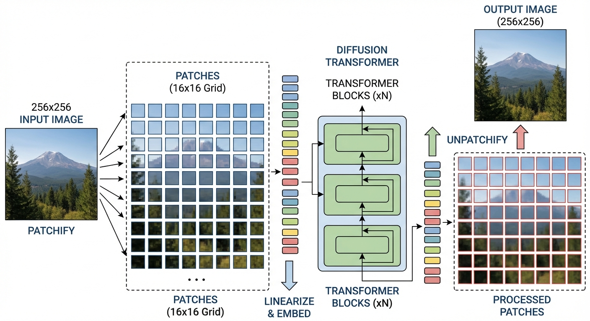
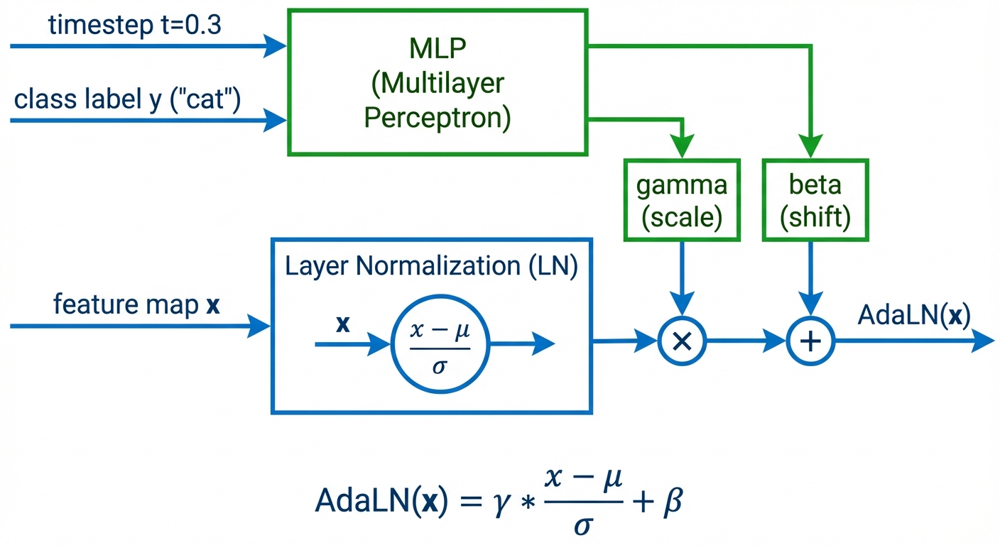
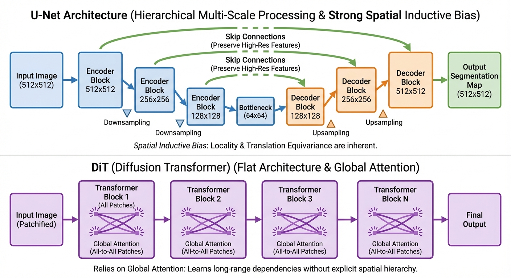

Diffusion & Flow Matching Part 10: Diffusion Transformers
- Vision Transformer (ViT) treats images as sequences of patches — this enables transformers to process images without convolutions
- Diffusion Transformer (DiT) adapts ViT for diffusion by adding time/class conditioning via AdaLN
- Key insight: DiT = ViT + AdaLN conditioning + latent space operation
- Trade-off: DiT scales better than U-Net but needs more data/compute to overcome weak spatial bias
In the previous post, we covered U-Net — the dominant architecture for diffusion models. But recent work shows that transformers can match or exceed U-Net performance while offering better scalability.
This post covers: 1. Vision Transformer (ViT) — the foundation that DiT builds upon 2. Diffusion Transformer (DiT) — how to adapt ViT for diffusion models 3. When to use DiT vs U-Net — practical guidance
Vision Transformer (ViT) Primer
Before understanding DiT, we need to understand Vision Transformer (ViT) — the architecture it’s built on.1
Transformers revolutionized NLP with attention mechanisms that capture long-range dependencies. But transformers expect sequences of tokens — how do you apply them to 2D images?
The breakthrough: Treat image patches as “visual words.” A 224×224 image split into 16×16 patches becomes a sequence of \((224/16)^2 = 196\) tokens. Now standard transformer machinery applies!
The ViT Architecture

Step-by-step:
- Patchify: Split image into non-overlapping \(p \times p\) patches
- Input: \(H \times W \times C\) image
- Output: \(N = (H/p) \times (W/p)\) patches, each of size \(p^2 \cdot C\)
- Linear embedding: Project each flattened patch to dimension \(d\) \[z_i = W_{\text{embed}} \cdot \text{flatten}(\text{patch}_i) + b\]
- This is just a learnable linear layer applied to each patch
- Add position embeddings: Since attention is permutation-invariant, we must tell the model where each patch came from \[z_i \leftarrow z_i + e_{\text{pos}}^{(i)}\]
- Position embeddings are learnable vectors (one per position)
- Without this, the model couldn’t distinguish a patch at top-left from bottom-right!
- Prepend [CLS] token: A special learnable token that aggregates information
- After processing, the [CLS] token’s output is used for classification
- Transformer encoder: Stack of identical blocks, each containing:
- Multi-head self-attention (patches attend to all other patches)
- MLP (feed-forward network)
- Layer normalization and residual connections
Just like words “fox” and “jumps” share semantic relationships, visual patches relate to one another:2
- Texture relationships: All sky patches attend to each other, learning “blueness” is consistent
- Structural relationships: A horse’s left ear patch attends to its right ear patch, learning symmetry
- Semantic relationships: Wheel patches attend to window patches, learning “car-ness”
This global attention — every patch sees every other patch — is what lets ViT capture long-range dependencies that CNNs struggle with.
- Classification head: MLP on the final [CLS] token representation
Why Patches? The Quadratic Cost Problem
You might wonder: why not treat each pixel as a token?
The math: A 224×224 image = 50,176 pixels. Self-attention is \(O(n^2)\), so attention would require \(50,176^2 \approx 2.5\) billion operations per layer!
Patches reduce this: With 16×16 patches, we get only 196 tokens. Attention cost: \(196^2 = 38,416\) operations — a 65,000× reduction.
The trade-off: We lose some fine-grained spatial information, but gain computational tractability.
ViT vs CNNs: Inductive Bias
| Property | CNNs | ViT |
|---|---|---|
| Local bias | Built-in (kernels are small) | None (attention is global) |
| Translation equivariance | Built-in (same kernel everywhere) | Must learn from data |
| Data efficiency | Good (bias helps with limited data) | Poor (needs lots of data) |
| Scalability | Limited (hard to scale past ~1B params) | Excellent (scales predictably) |
Key insight: ViT has weaker inductive bias than CNNs. This is a disadvantage with limited data (must learn what CNNs get “for free”), but an advantage at scale (fewer constraints on what it can learn).
From ViT to DiT
Now we can understand DiT as ViT adapted for diffusion. The key question: what changes are needed?
ViT for classification: - Input: image → Output: class label - No conditioning needed (besides the image itself)
DiT for diffusion: - Input: noisy image → Output: noise prediction (same size as input) - Must condition on timestep \(t\) and optionally class \(y\) - No [CLS] token needed (we want image output, not a single vector)
The Three Key Adaptations
1. Remove [CLS] token, add decoder - ViT: Uses [CLS] token for classification - DiT: Uses all patch tokens, decodes back to image via linear layer
2. Operate in latent space (see Latent Diffusion in Part 9) - ViT: Works on raw pixels (224×224 is manageable) - DiT: Works on VAE latents (raw 512×512 would be 65,536 tokens!)
3. Add conditioning mechanism (AdaLN) - ViT: No timestep/class conditioning - DiT: Must inject \(t\) and \(y\) into every block
Diffusion Transformer (DiT)
Motivation: Why Move Beyond U-Net?
U-Net works great, so why change? The problem is scaling.
U-Net’s issue: Adding more layers or channels hits diminishing returns. The hierarchical structure (downsampling → bottleneck → upsampling) limits how much compute you can effectively use.
Transformer’s advantage: It’s just repeated identical blocks. Want 2× the compute? Add more layers or wider hidden dimensions. This simplicity makes transformers scale predictably — a property called “scaling laws.”
Trade-off: Transformers have weaker spatial bias than convolutions. They need more data and compute to learn what convolutions get “for free.” But at massive scale (1000s of GPU-days), transformers win.
Recent work shows transformer architectures can exceed U-Net performance:3
| Property | U-Net | DiT |
|---|---|---|
| Scaling | Diminishing returns past ~1B params | Predictable: 2× compute → better FID |
| Design | Complex (skip connections, multi-resolution) | Simple (stack identical blocks) |
| Spatial bias | Strong (convolutions) | Weak (must learn from data) |
| Best for | Limited compute, few data | Massive compute, lots of data |
The DiT Architecture
Transformers expect sequences of tokens (like words in a sentence). But images are 2D grids!
The solution: Split the image into non-overlapping patches and treat each patch as a “visual word.”
Example: A 256×256 image with 16×16 patches becomes \((256/16)^2 = 256\) tokens. Now the transformer can process it just like a sentence of 256 words!
The catch: Attention is \(O(n^2)\) in sequence length. A 512×512 image with 16×16 patches = 1024 tokens = 1 million attention computations per layer. This is why DiT operates in latent space (more on this below).

DiT adapts Vision Transformer (ViT) for diffusion:4
- Patchify: Split latent into \(p \times p\) non-overlapping patches
- Embed: Linear projection maps each patch to a token vector (dimension \(d\))
- Add position: Learnable position embeddings tell the model where each patch came from
- Process: Stack of transformer blocks (self-attention + MLP)
- Decode: Linear layer maps tokens back to patches, reshape to image
Why Latent Space is Essential
Running DiT in pixel space is prohibitively expensive. Here’s why:
Pixel space: 256×256×3 image with patch size 2 → \((256/2)^2 = 16,384\) tokens Attention cost: \(16,384^2 \approx 270\) million operations per layer!
Latent space: VAE compresses 256×256×3 → 32×32×4, then patch size 2 → \((32/2)^2 = 256\) tokens Attention cost: \(256^2 = 65,536\) operations per layer
That’s a 4000× reduction in attention cost. Latent diffusion isn’t optional for DiT — it’s essential.

Patch size trade-off:
| Patch Size | Tokens (from 64×64 latent) | Quality | Compute |
|---|---|---|---|
| 2 | 1024 | Best (FID 2.27) | Highest |
| 4 | 256 | Good | Medium |
| 8 | 64 | Lower | Fastest |
Conditioning via AdaLN-Zero
Now for the key question: how does DiT handle time \(t\) and class label \(y\)?
The obvious approach: add \(t\) and \(y\) as extra tokens in the sequence. But this wastes capacity — every layer processes these tokens even though their values never change!
AdaLN’s insight: Instead of adding tokens, modulate the layer normalization. The conditioning doesn’t participate in attention — it just adjusts how the layers process features.
Analogy: Think of an audio equalizer. The EQ settings don’t become part of the music — they adjust the gain and tone of what’s playing. AdaLN adjusts the “gain and tone” of each layer based on timestep and class.

How AdaLN works — For each transformer block:
- Embed conditioning: \(c = \text{MLP}(e_t + e_y)\) where \(e_t, e_y\) are time/class embeddings
- Predict 6 parameters: \((\gamma_1, \beta_1, \alpha_1, \gamma_2, \beta_2, \alpha_2) = \text{Linear}(c)\)
- Modulate attention branch:
- Scale and shift after LayerNorm: \(x' = \gamma_1 \cdot \text{LN}(x) + \beta_1\)
- Gate the residual: \(x = x + \alpha_1 \cdot \text{Attention}(x')\)
- Modulate MLP branch:
- Scale and shift: \(x' = \gamma_2 \cdot \text{LN}(x) + \beta_2\)
- Gate the residual: \(x = x + \alpha_2 \cdot \text{MLP}(x')\)
The \(\alpha\) (gating) parameters are initialized to zero. This means at initialization, each DiT block computes: \[x_{\text{out}} = x + 0 \cdot \text{Attention}(x) = x\]
The block is an identity function — it just passes the input through unchanged! This makes training 28-layer networks stable because the model starts simple and gradually learns to use each layer.
Why this works so well: Research shows that zero-initialized weights gradually converge to a Gaussian-like distribution during training.5 This smooth convergence is more stable than random initialization — the network learns to “turn on” conditioning gradually rather than starting with noisy modulation.
Why AdaLN-Zero wins:6
| Method | How it works | Cost | ImageNet FID |
|---|---|---|---|
| In-context | Append \(t\), \(y\) as extra tokens | \(O(d)\) | 5.67 |
| Cross-attention | Attend over condition embeddings | \(O(d^2)\) | 3.75 |
| AdaLN | Modulate LayerNorm scale/shift | \(O(d)\) | 2.98 |
| AdaLN-Zero | AdaLN + zero-init gating | \(O(d)\) | 2.27 |
Note on text conditioning: For free-form text prompts (not class labels), cross-attention works better than AdaLN. This is what Stable Diffusion uses — the text encoder outputs a sequence of embeddings, and each DiT block cross-attends to them. See Part 9 for more on how conditioning flows through the network.
Comparison: U-Net vs DiT

Use U-Net if: - You’re training on limited compute (< 100 GPU-days) - Working in pixel space (not latent diffusion) - You need strong performance out-of-the-box with less data - Example: Fine-tuning Stable Diffusion on a custom domain
Use DiT if: - You have massive compute and data (foundation model scale) - Working in latent space with a pretrained VAE - You want best-in-class scalability and are willing to pay the compute cost - Example: Training a class-conditional ImageNet model from scratch
Here’s how the architectures compare:7
| Aspect | U-Net | DiT |
|---|---|---|
| Inductive bias | Strong (convolution = local, translation-invariant) | Weak (attention = global, permutation-invariant) |
| Scalability | Diminishing returns past ~1B parameters | Predictable scaling: 2× compute → better FID |
| Training cost | Lower (100s of GPU-days for Stable Diffusion) | Higher (1000s of GPU-days for DiT-XL/2) |
| Sample quality (@ equivalent cost) | Better on small/mid budgets | Better at massive scale |
| Conditioning | Ad-hoc (inject time, add cross-attn for text) | Principled (AdaLN, cross-attn, or in-context) |
| Architecture complexity | High (skip connections, resolution-dependent attn) | Low (repeat identical blocks) |
| Memory efficiency | Better (hierarchical = smaller feature maps) | Worse (all patches processed at full resolution) |
“Transformers are always better than CNNs” — Not true for diffusion! U-Nets remain state-of-the-art for many applications because they encode strong spatial priors. DiT only wins when you have enough data and compute to overcome its lack of inductive bias.8
Empirical result: DiT-XL/2 achieves FID 2.27 on ImageNet 256×256, beating the previous best (LDM) of 3.60. But this required training on 256 TPU-v3 cores — far more than U-Net baselines.9
DiT Model Configurations
DiT comes in four configurations borrowed from ViT:10
| Model | Hidden Dim | Depth | Heads | Parameters | Gflops |
|---|---|---|---|---|---|
| DiT-S | 384 | 12 | 6 | 33M | 0.4 |
| DiT-B | 768 | 12 | 12 | 130M | 5.6 |
| DiT-L | 1024 | 24 | 16 | 458M | 35.6 |
| DiT-XL | 1152 | 28 | 16 | 675M | 119 |
The naming follows ViT conventions (S=Small, B=Base, L=Large, XL=Extra Large), and the configs were chosen based on ViT scaling research.
Evaluating Generative Models: FID
We’ve mentioned “FID 2.27” several times — but what does this actually mean?
You can’t just compare generated images to training images pixel-by-pixel (that would penalize valid variations). Instead, we compare high-level features — does the model generate things that “look like” real images at a semantic level?
Fréchet Inception Distance (FID) does exactly this:11 1. Pass real images through a pretrained Inception network → get feature vectors 2. Pass generated images through the same network → get feature vectors 3. Compare the distributions of these features (mean and covariance)
How FID works:12
- Extract features: Use Inception v3’s 2048-dimensional penultimate layer activations
- Assume Gaussian: Model both real and generated feature distributions as multivariate Gaussians
- Compute distance: Calculate the Fréchet distance between the two Gaussians: \[\text{FID} = \|\mu_r - \mu_g\|^2 + \text{Tr}(\Sigma_r + \Sigma_g - 2(\Sigma_r \Sigma_g)^{1/2})\] where \((\mu_r, \Sigma_r)\) and \((\mu_g, \Sigma_g)\) are the mean/covariance of real and generated features
Interpreting FID scores: - Lower is better — FID = 0 means identical distributions - ImageNet benchmarks: FID < 5 is excellent, FID < 10 is good - DiT-XL/2 achieves FID 2.27 on ImageNet 256×256 (state-of-the-art as of 2023)
Why FID over other metrics?13 - Inception Score (IS): Only looks at generated images, ignores real data distribution - FID: Compares generated vs real — captures both quality AND diversity - Limitation: Assumes Gaussian features, biased on small samples
Note: FID is computed on a specific dataset (usually ImageNet) with specific image resolution. FID scores aren’t directly comparable across different datasets or resolutions.
Modern DiT Variants
DiT has become the backbone for several state-of-the-art models. Recent research has also improved the core conditioning mechanism — adaLN-Gaussian initializes modulation weights from Gaussian distributions (instead of zero), yielding a 2.16% FID improvement over AdaLN-Zero.14
Stable Diffusion 3 (SD3): - Uses “Multi-Modal Diffusion Transformer” (MM-DiT) - Separate transformer streams for text and image, with cross-attention - Text conditioning via T5 and CLIP embeddings
Flux: - Builds on DiT with improved text understanding - Uses rectified flow instead of DDPM-style diffusion - T5 + CLIP ensemble for text encoding
Sora (OpenAI): - Video generation using DiT - Treats video as sequence of patch tokens across space and time - Enables variable resolution and duration
Summary
Vision Transformer (ViT): - Treats images as patch sequences, enabling transformers for vision - Key components: patchify → linear embed → position encoding → transformer blocks → classifier - Weaker inductive bias than CNNs (must learn locality), but scales better
Diffusion Transformer (DiT): - DiT = ViT adapted for diffusion (no [CLS] token, adds decoder, adds AdaLN) - AdaLN-Zero: Inject timestep/class by modulating LayerNorm parameters, not adding tokens - Zero initialization of gating parameters → blocks start as identity → stable training - Must operate in latent space (4000× attention cost reduction)
When to use DiT vs U-Net: - U-Net: Limited compute, pixel space, need spatial bias - DiT: Massive compute, latent space, want scaling laws
The bigger picture: U-Net and DiT are different ways to parameterize the same math (\(u_\theta(x_t, t)\)). The architecture choice is about trade-offs: inductive bias vs scalability, data efficiency vs ultimate performance.
References
Foundational Papers:
- Dosovitskiy, A., et al. (2020). An Image is Worth 16x16 Words: Transformers for Image Recognition at Scale. ICLR 2021. (ViT)
- Peebles, W., & Xie, S. (2023). Scalable Diffusion Models with Transformers. ICCV 2023. (DiT)
- Dhariwal, P., & Nichol, A. (2021). Diffusion Models Beat GANs on Image Synthesis. NeurIPS 2021.
Latent Diffusion:
- Rombach, R., et al. (2022). High-Resolution Image Synthesis with Latent Diffusion Models. CVPR 2022. (Stable Diffusion)
Educational Resources:
- Encord. Diffusion Transformer (DiT) Models: A Beginner’s Guide. Blog post.
- Lightly AI. Diffusion Transformers Explained: The Beginner’s Guide. Blog post.
- DiT Project Page. Scalable Diffusion Models with Transformers. Official project page.
- APXML. U-Net vs Transformer Comparison for Diffusion. Course material.
- Towards Data Science. Diffusion Transformer Explained. Comprehensive walkthrough.
- Pinecone. Vision Transformers (ViT) Explained. Excellent visual explanations of patch embeddings and attention.
- AI Summer. How the Vision Transformer (ViT) works in 10 minutes. Concise tutorial.